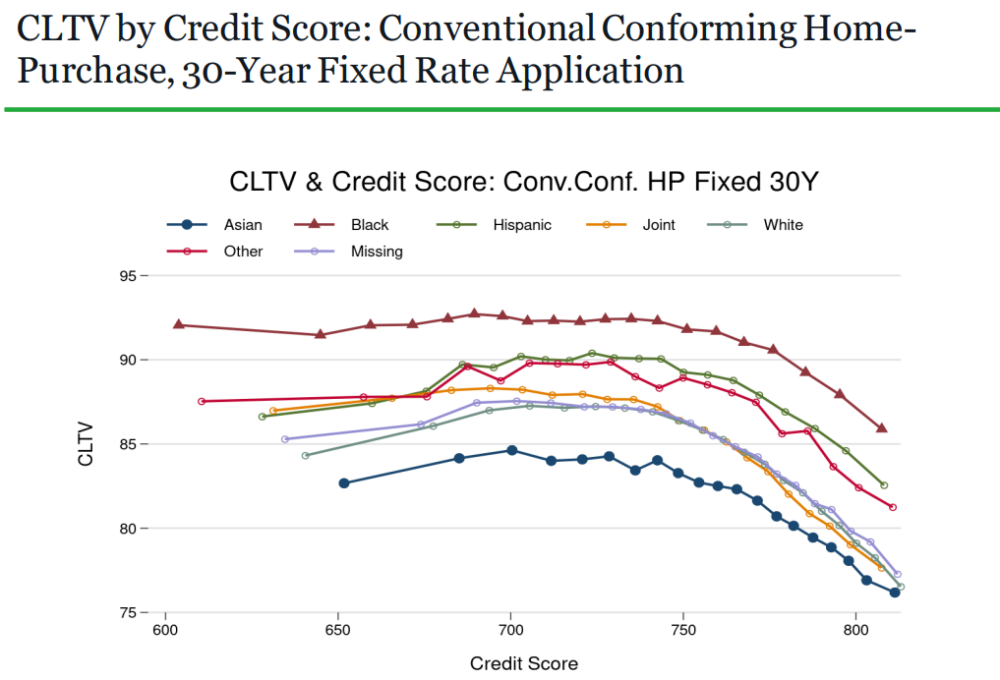

Accéder à un prêt, un parcours semé d’embûches ?
Acheter une maison, c’est bien plus qu’une simple transaction financière : c’est la concrétisation d’un rêve, celui de la stabilité, de la sécurité et du bien-être familial.
Mais si pour certains, l’accès à un prêt immobilier se fait sans trop de difficultés, pour d’autres, la route est longue, voire parfois inaccessible. [1, 2]
Si pour certains, les critères des institutions financières tels que le revenu, l’endettement et le score de crédit suffisent à ouvrir les portes du financement,
pour d'autres, ces mêmes critères se transforment en barrières insurmontables. Mais ces obstacles sont-ils uniquement liés à des éléments financiers objectifs ?
Pas toujours. Des études récentes montrent que des facteurs socio-économiques tels que la race, l’ethnicité ou la localisation géographique influencent également les décisions d’octroi.
Dans notre cas, nous allons nous concentrer sur l’État du Texas, un terrain riche en enseignements pour mieux comprendre les enjeux de l’accès aux crédits immobiliers.
Cet état offre un contexte idéal pour analyser les biais et les défis systémiques qui persistent.
En effet le Texas, à lui seul, illustre les contradictions et les complexités du marché immobilier américain :
- Une population multiculturelle riche : Le Lone Star State abrite une population aussi diverse qu’étendue, composée de 42,5 % de Blancs, 39,7 % d’Hispaniques et 11,8 % d’Afro-Américains. [3]
- Des taux de refus de prêts élevés : Les taux de refus de prêts immobiliers au Texas dépassent largement la moyenne nationale, ce qui soulève des questions sur l’équité des processus d’évaluation. [4]
- Des disparités socio-économiques marquées : Ces disparités, parfois aggravées par des pratiques discriminatoires, reflètent les défis systémiques auxquels font face les demandeurs de crédit issus de minorités.
Dans ce contexte, l’accès à la propriété réside au croisement de plusieurs facteurs : le profil financier de l’emprunteur, les politiques des institutions financières et les dynamiques sociales qui sous-tendent le marché immobilier.
Pourquoi ces disparités existent-elles, et comment peuvent-elles être atténuées ? Ce sont des questions cruciales que nous explorerons dans les sections suivantes.
Que disent les études sur ces pratiques bancaires ?
L'existence de ces obstacles dans l’accès aux prêts est également confirmée par l’état de l’art, qui met en lumière les pratiques bancaires et les disparités persistantes dans les décisions d’octroi. C'est ce que montrent les graphiques suivants tirés d'une étude du CFPB (Consumer Financial Protection Bureau) [5] :
Facteurs d’évaluation des demandes : Credit Score et CLTV
Le Credit Score évalue la capacité d’un emprunteur à rembourser un prêt. Cet indicateur joue un rôle central dans la décision d'octroi des banques, en fonction du risque perçu.
Le CLTV (Combined Loan-to-Value) mesure le risque en fonction du montant emprunté par rapport à la valeur du bien. Il permet d’évaluer si le prêt représente un risque acceptable pour l'institution prêteuse.
Figure 1 - Denial Rate : Les refus diminuent avec le score, mais restent plus élevés pour les individus "Noirs".

Figure 2 - CLTV : Les individus "Noirs" ont des CLTV plus élevés, même avec de bons scores.
Ces constats mettent en lumière des différences persistantes entre groupes démographiques, notamment sur la manière dont les scores de crédit et le CLTV influencent les décisions bancaires.
Bien que ces outils soient considérés comme objectifs, les résultats montrent une disparité qui mérite réflexion.
Quand les chiffres parlent : des inégalités bien réelles
Les données sont souvent les meilleurs témoins des disparités systémiques. Pour analyser les inégalités dans l’accès aux crédits immobiliers au Texas,
nous avons utilisé deux sources principales :
- La base HMDA (Home Mortgage Disclosure Act) : Elle recense chaque année les demandes de prêts aux États-Unis et fournit des données précieuses sur les caractéristiques des emprunteurs et des biens immobiliers. [6]
- Les données économiques des comtés texans (GDP) : Elles apportent une dimension géographique à notre étude, en reflétant les disparités économiques à l’échelle locale. [7]
Ces deux bases couvrent une période allant de 2018 à 2023 et représentent des millions de lignes de données.
Pour chaque année, près de 900 000 demandes de prêts ont été analysées.
Voici les principaux constats issus de notre analyse :
- Les minorités ethniques sont défavorisées : Les Afro-Américains et les Hispaniques se voient refuser des prêts à des taux beaucoup plus élevés que les Blancs.
Ce constat persiste même lorsque les profils financiers (revenu, score de crédit) sont similaires. Cela soulève des questions sur l’équité des critères d’évaluation.
- Déterminants inattendus : Des variables comme le sexe et l’âge, qui ne devraient pas jouer un rôle déterminant, semblent toutefois impacter les décisions des institutions financières.
Les femmes et les jeunes emprunteurs sont souvent défavorisés.
Ces résultats mettent en évidence que les disparités dans l’accès au crédit immobilier ne sont pas seulement une question de solvabilité.
Elles traduisent également des biais structurels, parfois inconscients, mais toujours préjudiciables aux populations concernées.
La Data Science à la rescousse : Comment nous avons procédé
Face à ces constats, la Data Science nous a offert un moyen puissant de mieux comprendre les disparités observées.
Nous avons adopté une approche structurée en deux grandes étapes :
üìä Comment nous avons r√©duit les biais dans l'attribution des pr√™ts avec le Machine Learning
Dans le domaine des prêts bancaires, il existe souvent des disparités entre les groupes raciaux, qui peuvent entraîner des inégalités dans l'accès au crédit. Notre objectif était donc clair : réduire ces biais en utilisant des modèles de Machine Learning performants et équitables.
üöÄ Pourquoi est-ce important ?
Notre étude précédente vient de montrer que certaines populations, comme les Afro-Américains, rencontrent souvent plus d'obstacles pour obtenir des prêts. Nous souhaitons garantir que chaque individu ait une chance équitable d'accéder au crédit, sans être discriminé en raison de sa race, son genre, ou d'autres attributs.
Pour cela, nous avons choisi d'entraîner nos modèles sur des données où nous nous assurons que l'analyse est aussi objective et équilibrée que possible.
üóÇÔ∏è La mani√®re dont nous avons organis√© les donn√©es
Nous avons donc décidé de travailler sur un jeu de données composé uniquement d'individus blancs âgés de 25 à 50 ans, car ces groupes sont souvent moins susceptibles d'être victimes de discriminations apparentes. Cela nous a permis d'obtenir une base de données moins biaisée et d'évaluer l'efficacité des modèles plus objectivement.
üîç Les mod√®les que nous avons utilis√©s ?
Nous avons testé deux modèles : XGBoost et Random Forest. Pourquoi ces deux-là ?
-
üìà XGBoost
C'est un modèle de classification très performant.
Il peut gérer directement des données manquantes, ce qui évite des étapes compliquées de nettoyage des données.
Il gère bien les variables catégoriques sans nécessiter beaucoup de transformation.
-
üå≥ Random Forest
Random Forest est robuste et résiste au surapprentissage, grâce à sa capacité à sélectionner aléatoirement les attributs nécessaires.
Il est efficace pour travailler sur des ensembles de données complexes et diversifiés.
En terme de performance, nous nous sommes concentrés sur deux critères : la capacité à faire des prédictions précises et à bien distinguer les cas où un prêt est accordé ou refusé.
Les résultats on montré que XGBoost est légèrement plus précis avec 89 % de prédictions correctes contre 88,25 % pour Random Forest. Il identifie également mieux les prêts à accorder (avec un rappel de 97,67 %).
De ce fait, XGBoost se distingue comme le modèle offrant les meilleures performances pour prédire si un prêt doit être accordé ou refusé. La performance d’un modèle ne suffit pas : il est tout aussi important de s’assurer que ses décisions sont équilibrées et justes.
ü§ñ Objectivit√© et r√©duction des biais raciaux
En complément, nous avons utilisé une analyse par PCA (Principal Component Analysis) pour visualiser les différences dans les contributions des variables.
Cette méthode nous a permis de mieux appréhender l’impact des facteurs sensibles sur les décisions finales. Nous avons donc analysé l’impact de notre modèle performant sur deux groupes spécifiques : les Blancs et les Afro-Américains, dans des zones de caractéristiques similaires.
Réduire les biais : un pas vers l’équité
Sans modèle, les écarts étaient très marqués : dans certaines zones, les Afro-Américains avaient jusqu’à 25 points de moins en acceptation (Zone 4).
-
Avant l’application des modèles, l’écart moyen entre les taux d’acceptation des emprunteurs blancs et afro-américains était de 14 points de pourcentage.
-
Après le modèle, cet écart a été réduit à 9 points, soit une diminution de 36 %. Cela représente un pas significatif vers l’équité.
Ainsi, notre modèle non seulement offre des performances optimales, mais il contribue également à réduire les écarts injustifiés entre les groupes, rendant le processus d’octroi de prêts plus équitable.
Pourquoi ces résultats sont importants ?
Ces conclusions vont bien au-delà des chiffres. Elles mettent en lumière la nécessité urgente de repenser les processus d’octroi de crédit dans une optique plus équitable :
-
Pour les banques : L’adoption de modèles basés sur des données objectives et dépourvus de biais peut rendre les décisions plus justes et transparentes.
Cela ne se limite pas à améliorer leur image publique, mais renforce également leur crédibilité et leur conformité aux exigences réglementaires.
-
Pour les consommateurs : Réduire les discriminations permet d’offrir une égalité des chances à tous les emprunteurs, quel que soit leur profil socio-économique ou démographique.
Cela favorise également la confiance des citoyens dans le système bancaire.
-
Pour les agences de régulation : Des outils comme ceux que nous avons développés peuvent être utilisés pour identifier les pratiques douteuses et surveiller les écarts significatifs dans les décisions des institutions financières.
Cela ouvre la voie à des politiques plus équitables et à une meilleure application des lois anti-discrimination.
En somme, ces résultats soulignent qu’un accès équitable au crédit n’est pas seulement un enjeu technique ou économique,
mais une pierre angulaire de la justice sociale et de la réduction des inégalités.